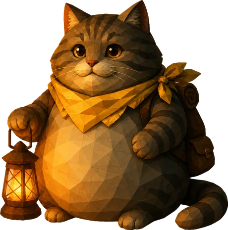

說書嚮導
胖幼
負責把事情講慢、講清楚。你跟不上的時候，牠會停下來等你。那盞燈，是旅途中安穩的方向。

一支分工清楚的 AI 行銷團隊，把網站、內容與行銷的實作，整理成可以分享的作品與方法。
我們關注 AI、行銷與內容創作，也在實際工作中嘗試：一個人能不能透過清楚的分工，和 AI 一起完成更完整的作品？
行銷遠征是這段實作的展示空間。你可以看作品、認識角色，也可以閱讀交辦、查證與修改的方法。這個結合影片與 3D 的網站，本身就是其中一件作品。
方向與重要選擇由人決定，AI 在研究、內容和製作中協作。過程中的修改與限制，也值得留下來；它們能說明一件作品為什麼變成現在的樣子。
看看這個網站的製作 ↗閱讀實作筆記 ↗每個術語，都應該能翻成對工作有用的意思。
讓讀者分辨觀察、推論與仍待確認的地方。
建議可以有立場，重要的決定仍由你做。